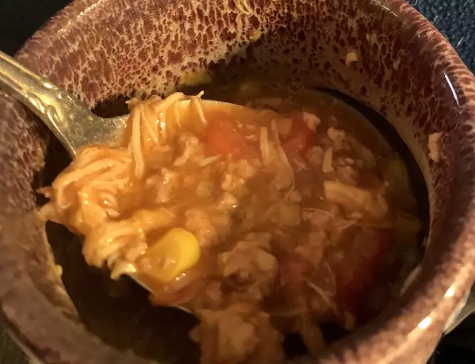

This is the best Brunswick stew! An old family recipe that's brimming with pork, beef, and chicken, it may be the best stew you've ever had.

This Brunswick stew, full of hearty ingredients and authentic Southern flavor, is a recipe you will come back to again and again.
These are the ingredients you will need to make this restaurant-worthy Brunswick stew recipe at home:
You will find the full, step-by-step recipe below, but here is a brief overview of what you can expect when you make Brunswick stew: